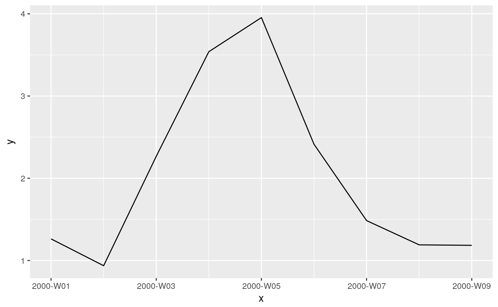

A class for week numbers, according to ISO 8601.
Coercion to the week number class:
library(weeknumber)
as.weeknumber(c(-1:1, 51:52, NA))
#> [1] "1999-W52" "2000-W01" "2000-W02" "2000-W52" "2001-W01" NA
as.weeknumber("2000-W01")
#> [1] "2000-W01"
as.weeknumber(as.Date("2000-12-28"))
#> [1] "2000-W52"Make week number object from year and week:
make_weeknumber(2000:2001, 4:6)
#> [1] "2000-W04" "2001-W05" "2000-W06"
make_weeknumber(2019:2020, 53)
#> [1] NA "2020-W53"Get year and week number from an object:
x <- as.weeknumber(c(-1:1, 51:52, NA))
year_week(x)
#> $year
#> [1] 1999 2000 2000 2000 2001 NA
#>
#> $week
#> [1] 52 1 2 52 1 NAset.seed(0)
x <- seq(as.weeknumber("2000-W01"), as.weeknumber("2000-W09"))
y <- cumsum(rnorm(length(x)))
d <- data.frame(x, y)
library(ggplot2)
p <- ggplot(d, aes(x, y)) +
geom_line()
print(p)